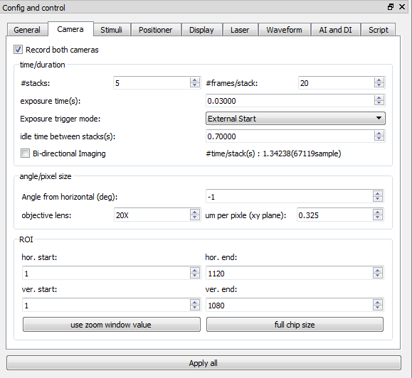
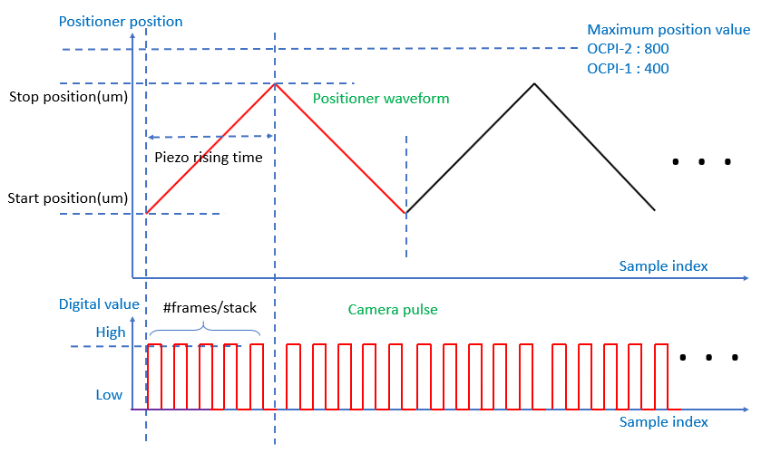

Camera tab
- Record both cameras : eables to record both cameras.
- #stacks : sets the number of stacks.
- #frames/stack : sets the number of frames in a stack.
- exposure time(s) : set exposure time. This value is valid only for "External Start" mode in exposure trigger mode.
- exposure trigger mode : selects exposure trigger mode. Refer to the explanation in the exposure trigger mode section.
- idle time between stacks(s) : sets idle time between stacks.
- bi-directional imaging : makes an acquition enable during the positioner travel back time also. Refer to the bi-directional imaging waveform below.
- angle from horizontal(deg) : specifies angle between objective lens and horizontal plain. This is just used as an information.
- objective lens : secifies zoom factor of the objective lens. This is just used as an information.
- um per pixel (xy plane) : secifies pixel size. This can be also calculated from the zoom factor. This is just used as an information.
- hor. start : sets the horizontal start of the sensor ROI or displays horizontal start of the soft ROI when we press "use zoom window value" button. Refer to the ROI section.
- hor. end : sets the horizontal end of the sensor ROI or displays horizontal end of the soft ROI when we press "use zoom window value" button.
- ver. start : sets the vertical start of the sensor ROI or displays vertical start of the soft ROI when we press "use zoom window value" button.
- ver. end : sets the vertical end of the sensor ROI or displays vertical end of the soft ROI when we press "use zoom window value" button.
- use zoom window value : enables soft ROI with the region selected by zoom window.
- full chip size : enable full size imaging.

Positioner control wavefrom and camera control pulse for bi-directional imaging
